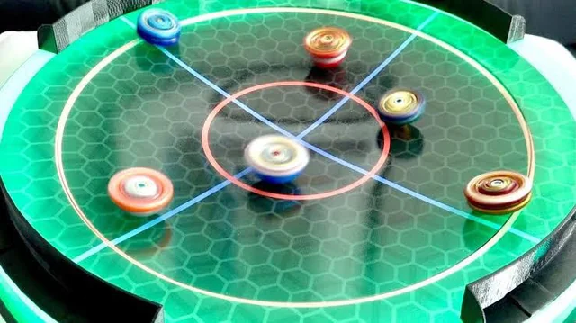

A brief overview of what beyblades are + some hype elements. Beyblades are spinning top toys that are designed for high-speed battles in an arena, often referred to as a “Beystadium.” Each Beyblade is made up of several parts, including an Energy Layer, Forge Disc, and Performance Tip, which players can customize to create unique battling styles. Players “launch” their Beyblades into the stadium using ripcords or string launchers, aiming for powerful spins and strategic movements to knock their opponents out of the arena, burst them apart, or simply outlast them. The thrill of Beyblade battles comes from the blend of skill, customization, and strategy. Each spin brings an unpredictable, fast-paced duel that can change in an instant. Some Beyblades excel at aggressive attacks, striking their opponent with heavy hits, while others are built for defense or stamina, enduring clashes to stay spinning the longest. The best part? The outcomes are as explosive as the battles, with Beyblades bursting into pieces from a powerful hit or pulling off a last-second spin victory! With the combination of quick reflexes, creative customization, and the adrenaline of real-time action, Beyblade battles are an epic showdown of both skill and excitement.

